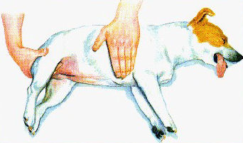

|
(deel 2)
Wat je als eerste
moet doen als je ter plekke bent

Controleer het bewustzijn
Controleer of de hond bij bewustzijn is. Als dat zo is, houd hem dan goed in
bedwang. Verroert de hond zich niet, kijk dan of hij reageert door zijn naam te
noemen. Knijp vervolgens in de zoolkussens of trek zachtjes aan een poot om te
zien of de hond deze terugtrekt. Als een reactie uitblijft, controleer je de
ademhaling.
Controleer de pols
Voel de pols van de hond door uw vingertoppen in de kleine plooi tussen de
spieren aan de binnenkant van de achterpoot te plaatsen. De pols moet krachtig
en regelmatig zijn. De pols kan zwak en onregelmatig worden als de pols en zijn
de ogen wijd geopend, start dan met reanimatie.
Controleer de hartslag
Plaats uw vlakke hand stevig op de borst van de hond (direct achter de linker
elleboog) om de hartslag te voelen. Bij kleinere honden is het soms
gemakkelijker om de hele hand rond het onderste gedeelte van de borstkast direct
achter de ellebogen te leggen. Tel het aantal slagen per vijftien seconden en
bereken de hartslag per minuut. De slagen moeten krachtig en regelmatig zijn. De
hartslag versnelt na lichamelijke inspanning, oververhitting, bij hartproblemen,
bij shock en na pijn. Als je geen hartslag voelt, bereid je je voor op
reanimatie.
Je hond in bedwang houden
Als je hond bij bewustzijn is, moet je hem mogelijk in bedwang houden. Veel
gewonde honden zijn angstig en kunnen veel pijn hebben. Soms moet je de hond
zelfs muilkorven (een 'muilkorf' van een das of een panty voldoet ook). Een
redelijk rustige hond die bij bewustzijn is en kan staan, kan verder in bedwang
worden gehouden door hem tegen je borst aan te houden met een arm losjes rond
zijn nek. Spreek rustig en zacht tegen de hond tijdens een onderzoek. Leg de
hond plat op zijn zij.
Controleer de ademhaling
Als je de borstkas niet op en neer ziet bewegen, plaats je je hand erop om
beweging te voelen. Als je geen beweging voelt, hou je een doekje voor de neus
van de hond om de ademhaling te controleren. Onder normale omstandigheden ademt
een hond in rust tussen de 15 en 30 keer per minuut. De ademhaling van een hond
is sneller en oppervlakkiger bij oververhitting, pijn, shock en hartproblemen. Als
je hond niet ademhaalt, controleer je zijn hartslag en pols en bereid je voor op het toepassen van kunstmatige ademhaling en/of hartmassage.
Verder naar deel 3
|